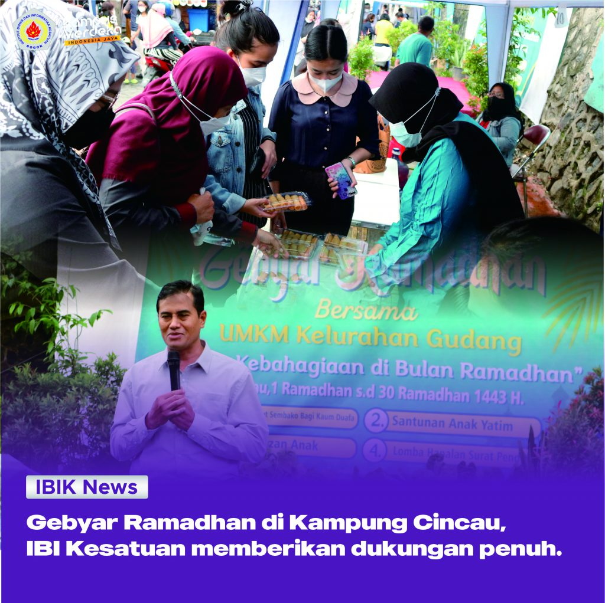

Selasa, 14 Juni 2022
Pada hari Selasa (5/4), Wakil Wali Kota Bogor telah meresmikan kegiatan Gebyar Ramadhan bersama UMKM Kelurahan Gudang yang bertemakan “Gelar Kebahagiaan di Bulan Ramadhan” di Jalan Kampung Cincau, Kelurahan Gudang, Kecamatan Bogor Tengah. Gebyar Ramadhan ini bertujuan untuk membantu meningkatkan perekonomian UMKM warga sekitar setelah 2 tahun dilanda pandemi.
Kegiatan peresmian dimulai pukul 16:00, dan dihadiri oleh Dedie Abdul Rachim selaku Wakil Walikota Bogor, seluruh panitia Gebyar Ramadhan, Bambang Hengky R, S.Pi., M.M., Ph.D. selaku Perwakilan dari IBI Kesatuan, UMKM warga sekitar, RT/RW kelurahan gudang, mahasiswa IBI Kesatuan, dan masyarakat umum.
Bambang Hengky R, S.Pi., M.M., Ph.D. memberikan sambutan dalam acara tersebut. Beliau menyampaikan bahwa IBI Kesatuan sangat mendukung penuh acara Gebyar Ramadhan dan harapannya acara tersebut dapat memberikan kemudahan untuk para pelaku UMKM di kelurahan gudang dan babakan pasar dalam memperkenalkan produknya.
Selain itu, Mashadi S.E., M.M. selaku koordinator acara dari IBI Kesatuan mengatakan bahwa rangkaian acara ini juga dilakukan untuk pembentukan kampung destinasi wisata, dan hal yang pertama dilakukan adalah dengan mengadakan Gebyar Ramadhan untuk UMKM kelurahan gudang dan babakan pasar, beliau berharap agar acara ini dapat membantu UMKM naik kelas yang salah satunya adalah meningkatkan omset UMKM warga sekitar dan memperkenalkan produk mereka kepada masyarakat luas.
Gebyar Ramadhan ini tidak hanya ditujukan untuk pelaku usaha tetapi juga untuk masyarakat agar merasakan suka cita di bulan Ramadhan, kegiatan ini juga menjadi titik awal untuk membangun para UMKM khususnya di kelurahan gudang agar usahanya dapat terus berlanjut.
Dalam kegiatan yang berlangsung selama bulan Ramadhan ini IBI Kesatuan, Bank BJB, Lembaga kemasyarakatan di kelurahan gudang seperti RT, RW, Karang Taruna, dan para pemuda ikut terlibat secara langsung, dan harapannya kegiatan ini dapat menjadi kegiatan rutin setiap tahun di bulan Ramadhan.